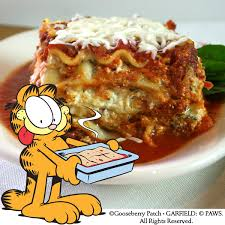

Garfield Inspired Lasagna

Description
This is not an official recipe by any means. It was taken from the
Binging With Babish
website where the creator, Anderew Rea, is a self-proclaimed food and movie enthusiast who's
famous for recreating food scenes from movies.
Ingredients
- 1 lb pork
- 1 lb beef
- 1 lb veal
- 1 chopped onion
- 1 chopped carrot
- 2 stalks chopped celery
- Red pepper falkes (optional)
- Oregano
- 4 cloves of garlic
- 2 cups of white wine
- 2 cups of chicken stock
- 1 (28oz/800g) can peeled whole tomatoes
- Chopped sage
- A few springs of fresh basil
- 1 1/2 cups of milk
- 2 bay leaves
- 1/2 cup freshly chopped basil
- 1/2 cup heavy cream
- 3oz of grated parmesan
- Salt
- Pepper
- Mozorella cheese
- Ricotta cheese(Recipe here)
- Pasta(Recipe here)
Directions
- Add some olive oil to a large pot over medium high heat, and add the beef, pork, and veal.
Cook to render the fat out of it, and strain it over a large bowl. Set aside the meat and the fat.
- Using some of the reserved fat, add 1 chopped onion, 1 large chopped carrot, and 2 celery stalks.
You can also add a few optional shakes of red pepper flakes if you’re feeling saucy (pun intended),
and a healthy pinch of oregano. Stir to combine.
- Add 4 cloves of garlic and sauté for one minute.
Deglaze mixture with 2 cups of wine, scraping the delicious fond
off of the bottom of the pot before adding back meat mixture.
- Add 2 cups of homemade chicken stock or chicken stock in which you’ve dissolved a packet of gelatin,
along with one 28 ounce can of peeled whole tomatoes, one 14.5 ounce can of diced tomatoes, some chopped sage,
a few sprigs of fresh basil, 1 ½ cups of milk, and two bay leaves. Stir to combine.
- Add in the spiced clarified butter and salt.
- Cover and slow simmer sauce for 4 hours.
Alternatively, you could also bake the sauce with the lid partially open in a 325°F oven for about 4 hours.
- Once everything is thick and cohesive, remove sprigs of basil, and add ½ cup of freshly chopped basil,
½ cup of heavy cream, and 3 ounces of grated parmesan. Stir to combine. Season with salt and pepper.
- Set on the back burner and start working on your fresh pasta.
- Preheat your oven to 375°F
- Once your dough is rolled out start layering your baking dish.
First layer sauce, then pasta, then mozzarella cheese, then ricotta cheese.
Repeat this until you reach the top and add some grated parmesan cheese.
Place baking dish on a baking sheet and cook in your oven for 45 minutes.
- Once cooked, remove from oven, let cool for 30 minutes. Dig in and enjoy!